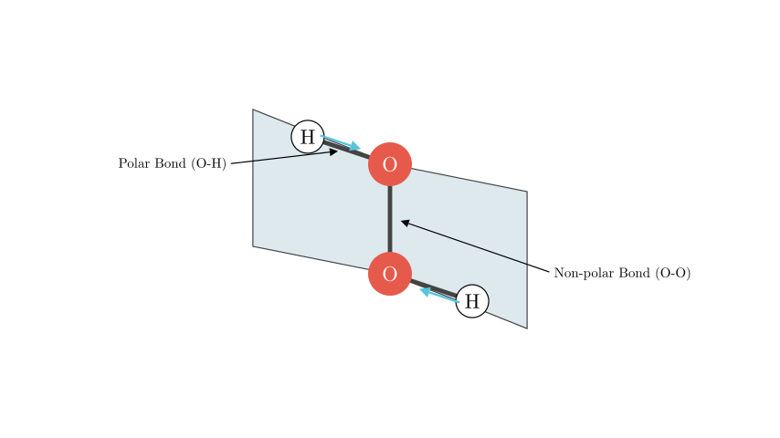
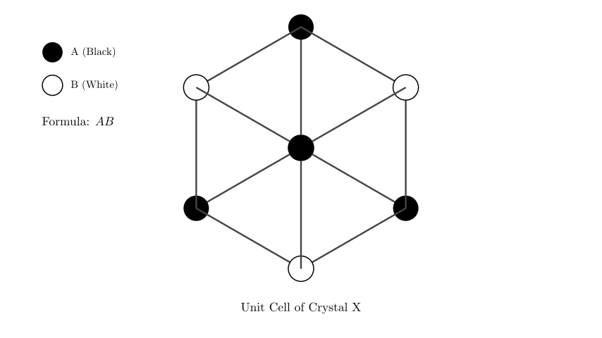
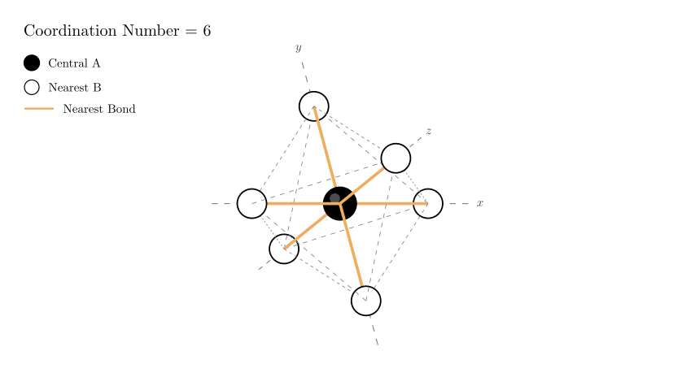

problem_23_chemistry_g12
Problem Statement:
The molecular structure of H${2}$O${2}$ (hydrogen peroxide) and the structural unit of a certain ionic crystal X are shown in the figure. Which of the following statements is incorrect?
A. The H${2}$O${2}$ molecule is a polar molecule.
B. The forces existing in the H${2}$O${2}$ crystal include polar bonds, non-polar bonds, hydrogen bonds, and van der Waals forces.
C. The chemical formula of crystal X can be represented as AB.
D. In crystal X, the number of B ions closest to each A ion is 12.
Solution Approach:
We will analyze the properties of the H${2}$O${2}$ molecule based on its geometry to evaluate statements A and B. Then, we will interpret the unit cell diagram of crystal X to determine its stoichiometry (chemical formula) and the coordination number of the ions to evaluate statements C and D. The goal is to identify the single incorrect statement.

Analysis of H${2}$O${2}$ (Statements A and B):
-
Molecular Polarity (Statement A):
The structure of H${2}$O${2}$ is often described as an "open book" shape. The two O-H bonds lie in different planes, creating a dihedral angle. Due to this asymmetry, the dipole moments of the polar O-H bonds do not cancel out. Therefore, the molecule has a net dipole moment.
Conclusion: H${2}$O${2}$ is a polar molecule. Statement A is correct.
-
Forces in the Crystal (Statement B):
- Intramolecular Forces (within the molecule):
- The O-H bond is formed between atoms with different electronegativities, making it a polar covalent bond.
- The O-O bond is formed between identical atoms, making it a non-polar covalent bond.
- Intermolecular Forces (between molecules):
- Since H${2}$O${2}$ contains hydrogen attached to highly electronegative oxygen, it forms hydrogen bonds between molecules in the solid state.
- Van der Waals forces (dispersion forces) exist between all molecules.
Conclusion: The crystal contains polar bonds, non-polar bonds, hydrogen bonds, and van der Waals forces. Statement B is correct.

Analysis of Crystal X Formula (Statement C):
To determine the chemical formula, we examine the provided structural unit (the cube).
- The diagram shows a cube with ions located at the corners.
- There are 8 corners in total.
- Counting the ions in the diagram: There are 4 "A" ions (black) and 4 "B" ions (white) occupying alternating corners.
- In an infinite crystal lattice composed of repeating units like this, the ratio of A to B is maintained as 1:1.
- Alternatively, using the unit cell contribution method for this specific cube (assuming it represents the stoichiometry directly):
- Number of A ions = $4 \times \frac{1}{8} = 0.5$
- Number of B ions = $4 \times \frac{1}{8} = 0.5$
- Ratio A : B = $0.5 : 0.5 = 1 : 1$.
Conclusion: The chemical formula is AB. Statement C is correct.

Analysis of Coordination Number (Statement D):
We need to determine the number of B ions closest to a single A ion.
- Identify the Geometry: The structural unit shows A and B ions alternating at the corners of a cube. This arrangement corresponds to the rock salt (NaCl) crystal lattice structure.
- Determine Neighbors:
- Pick any A ion as the reference point.
- The nearest neighbors are the B ions located along the edges connected to that A ion.
- In a 3D cubic lattice, any given corner (vertex) is the meeting point of 6 edges (up, down, left, right, front, back).
- Therefore, each A ion is surrounded by 6 nearest B ions.
- Evaluate Statement D:
- Statement D claims the number of nearest B ions is 12.
- A coordination number of 12 is typical for "closest packing" of identical atoms (like in metallic crystals FCC or HCP), or for second-nearest neighbors in this lattice (A to A), but not for the nearest neighbors of opposite charge in an ionic AB crystal (which is typically 6 or 8).
Conclusion: The coordination number is 6, not 12. Statement D is incorrect.
Final Answer:
The incorrect statement is D.